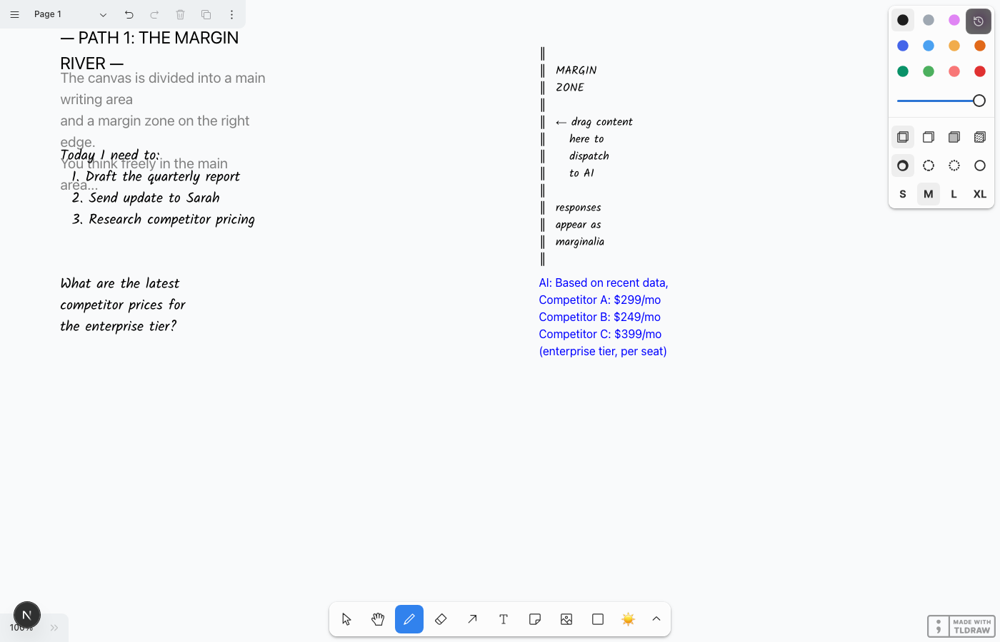
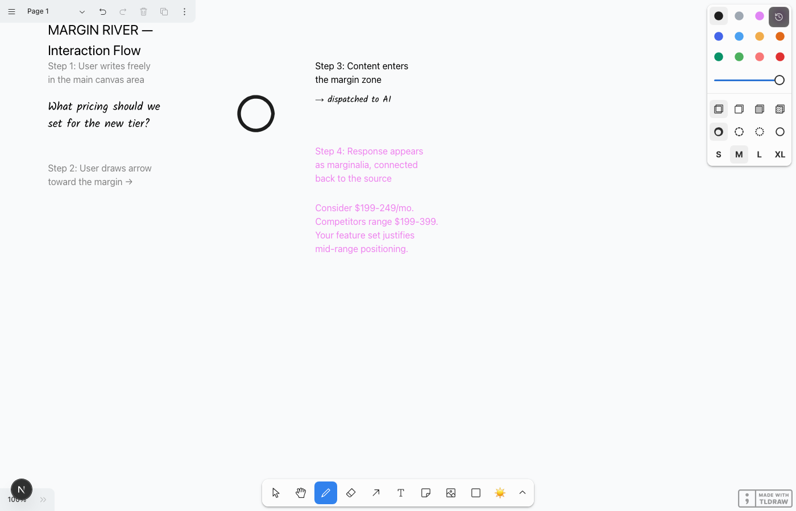
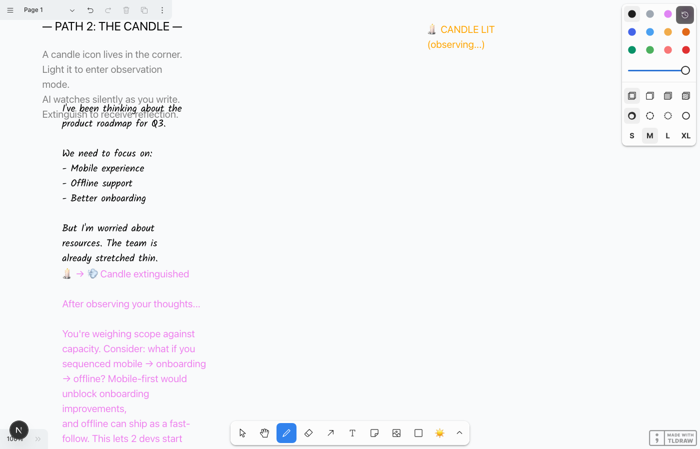
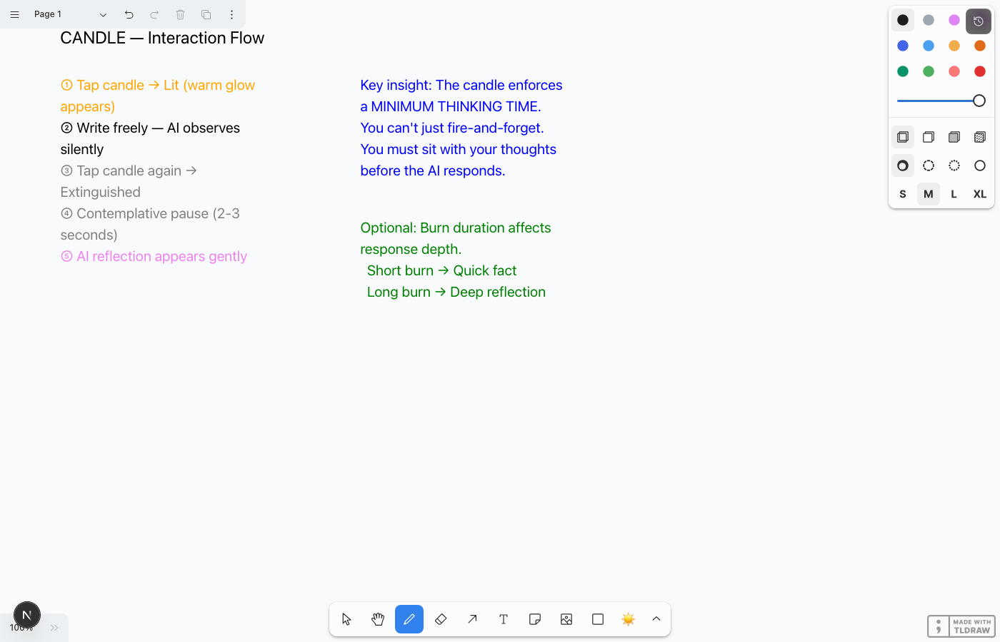
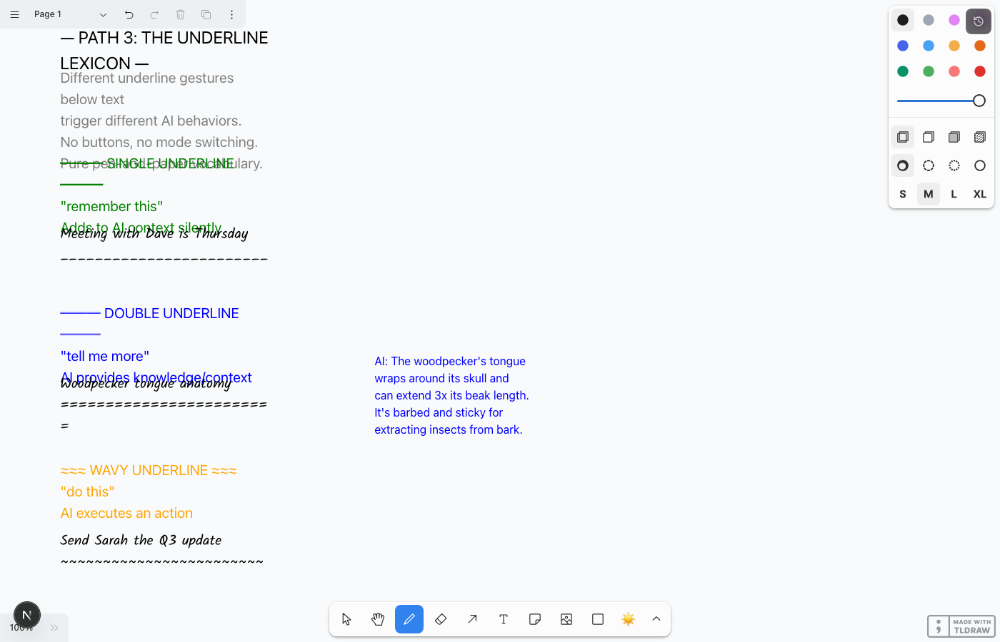
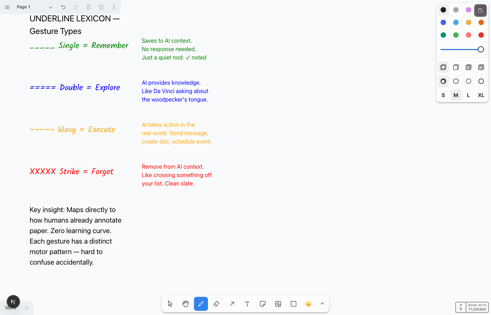

What pricing should we set for
the new enterprise tier?
Competitors seem to range from
$199 to $399 per seat...
the new enterprise tier?
Competitors seem to range from
$199 to $399 per seat...
→
Three alternative interaction paradigms for dispatching to AI on a calm, distraction-free canvas
Describe the tongue of a woodpecker— Leonardo da Vinci, c. 1510
Medieval scribes left wide margins for annotations, corrections, and commentary. Over centuries, marginalia became a rich tradition — readers would converse with texts, leave questions, draw connections. The margin was the thinking space beside the thinking space.
In Woodpecker, the canvas gains a visible right margin — a gentle vertical line dividing your writing space from the AI's territory. Content in the main area is yours alone. To dispatch to AI, you draw an arrow toward the margin, or write directly in it. Responses appear as elegant marginalia, connected back to their source.


The spatial separation is key. Your thinking happens on the left. AI knowledge lives on the right. There's a physical boundary — the margin line — that you consciously cross when you want help. You never accidentally summon AI; you have to deliberately push content across the river.
The responses are small. Marginalia is compressed, dense, efficient. It doesn't dominate your thinking space. It annotates it.
gesture-detection.ts with detectArrowGesture()HandwrittenTextShapeUtil but constrain x-position to margin zone. Add maxWidth prop for compact text.A small candle icon lives in the corner of the canvas. It's the bridge between solitary thinking and AI collaboration. But unlike the circle-and-hold, the Candle enforces a minimum thinking time. You can't fire-and-forget. You must sit with your thoughts first.
When you tap the candle, it "lights" — a warm, subtle glow appears at the edge of the canvas. The AI is now silently observing everything you write. It doesn't interrupt. It doesn't suggest. It watches. When you're done thinking, you tap the candle again to "extinguish" it. After a contemplative pause of 2-3 seconds, the AI delivers its reflection — informed by the full context of everything you wrote while the candle was burning.
You're weighing scope against capacity. Consider sequencing: mobile → onboarding → offline. Mobile-first would unblock onboarding improvements (you can't onboard to an app that doesn't exist on mobile). Offline can ship as a fast-follow since the architecture decisions you make for mobile will lay the groundwork. This lets 2 developers start immediately while the third finishes current work.


The Candle inverts the typical AI interaction. Instead of "ask → answer", it's "think → observe → reflect". The user is in control of the duration. A quick question gets a short burn (30 seconds). Deep thinking gets a long burn (5+ minutes). The AI has more context for longer sessions, naturally producing more thoughtful responses.
The deliberate pause after extinguishing is crucial. It creates a moment of stillness between the human's thinking and the AI's response. Like the moment between asking a wise friend a question and them taking a breath before answering.
Optional depth mechanic: The burn duration could map to response depth. <30s = quick fact. 1-3min = contextual answer. 5+ min = deep, multi-faceted reflection. This creates an incentive to think longer.
<button> in the tldraw overlay layer. Toggle between lit/unlit CSS states.editor.toImage(). Send as vision prompt to Claude Code.People have been annotating paper for centuries. A single underline means "important." A double underline means "very important." A wavy line means "questionable." A strikethrough means "delete." These conventions are universal — taught in every school, used in every language.
The Underline Lexicon maps four distinct pen gestures below text to four different AI behaviors. No buttons. No mode switching. No chrome. Just pure pen-and-paper vocabulary that happens to summon intelligence.


There is zero UI chrome. No buttons, no toolbars, no mode menus. The interaction vocabulary is entirely pen-based and maps to gestures people already know. A single underline beneath "Meeting at 3pm" to remember it. A double underline beneath "quantum entanglement" to explore it. A wavy line beneath "email the client" to execute it.
Each gesture has a distinct motor pattern that's nearly impossible to confuse accidentally. A single straight line feels different from two quick lines, which feels different from a wavy squiggle. This is important for preventing false triggers on a device meant for calm.
The "remember" gesture is especially powerful. It lets you build up context over time without asking a question. By the time you do ask (via double underline), the AI already knows your meeting is Thursday, your budget is tight, and Dave prefers email over Slack.
gesture-detection.ts to analyze stroke properties. Key signals: y-variance (low = horizontal), x-span (wide = underline), number of segments, waviness (y-oscillation frequency).editor.getCurrentPageShapes() filtered by y-position.analyzeForEnclosingGesture patterns.| Dimension | Margin River | Candle | Underline Lexicon |
|---|---|---|---|
| Enforces slowness | |||
| Feels natural on paper | |||
| E-ink compatibility | |||
| Intent specificity | |||
| Technical complexity | |||
| Free sketching support | |||
| Coexists with circle+hold | |||
| AI context richness | |||
| "Magical" feeling |
These three paradigms aren't competing alternatives — they're complementary layers that serve different moments in the thinking process. The most powerful version of Woodpecker would offer all three, each emerging naturally when the user needs it:
The Underline Lexicon is the foundation. It's the most natural, lowest-friction way to interact with AI from a pen-first interface. Single underlines passively build context. Double underlines satisfy curiosity. Wavy underlines dispatch actions. This should be the first to implement because it extends the pen vocabulary rather than adding UI.
The Candle is the philosopher's tool. When you want to think freely — sketch, mind-map, wander — and then receive a holistic reflection, light the candle. This is unique because it doesn't require you to specify what you want help with. The AI observes the arc of your thinking. Implement second as the "deep thinking" mode.
The Margin River is the scholar's tool. For users who want a persistent, spatial separation between their thinking and AI's knowledge — a reading-and-annotating mode rather than a free-sketching mode. This could be a page layout option rather than a global feature — "ruled page with margin" vs "blank canvas".
Together with the existing circle-and-hold (the quick, targeted dispatch), these four paradigms would create a remarkably rich yet calm interaction vocabulary:
| When you want to... | You... | Metaphor |
|---|---|---|
| Ask about specific content | Circle it + hold | Magnifying glass |
| Remember / explore / act / forget | Underline with the right stroke | Pen annotations |
| Think freely, then get reflection | Light the candle, write, extinguish | Candlelit study |
| Have a persistent thinking + reference space | Use a margined page layout | Scholar's manuscript |
The key principle across all of these: the user always initiates. The AI never interrupts. The AI never suggests. It waits. It observes. It responds only when summoned — and only through deliberate, physical gestures that feel like extensions of the pen, not departures from it.
This is how we compete with the phone. Not by being faster, but by being better at being slow.